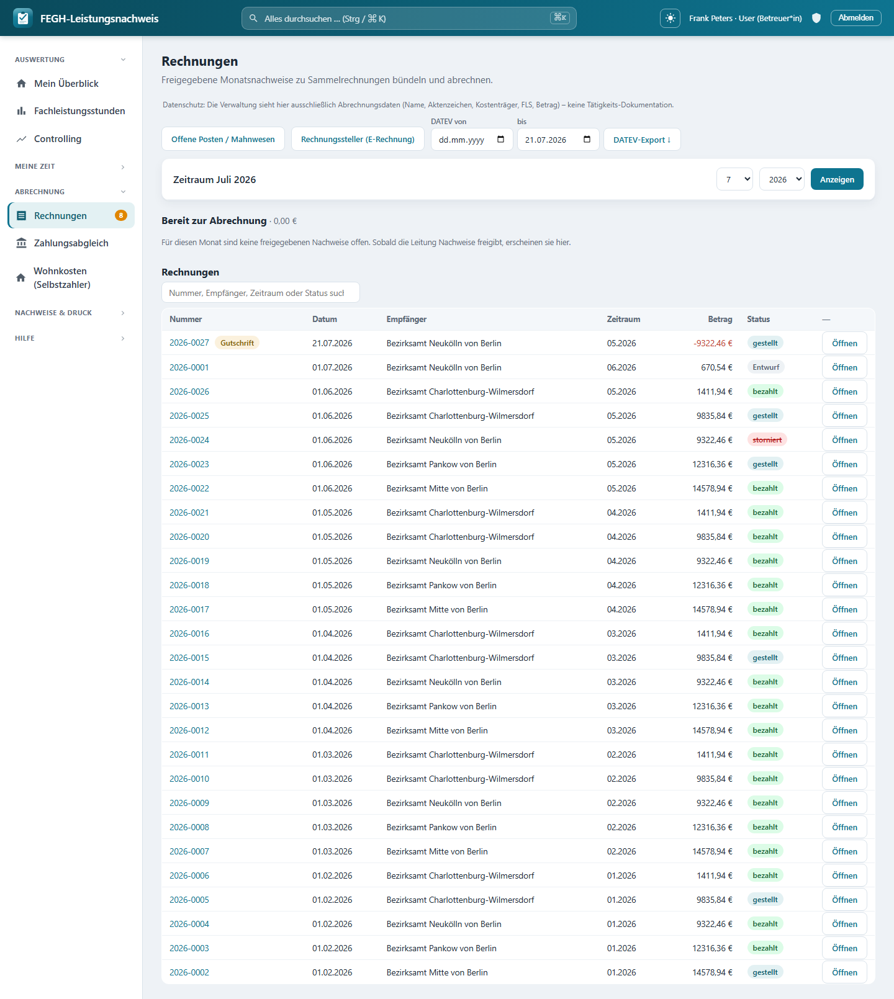

Abrechnung, Rechnungen & XRechnung¶

Rechnungen: freigegebene Nachweise je Kostenträger bündeln, Sammelrechnung erstellen, Suchfeld über der Rechnungsliste.
Am Monatsende werden aus den erfassten Leistungen echte Rechnungen an die Kostenträger. Damit dabei nichts Halbfertiges abgerechnet wird, läuft jeder Monatsnachweis (eine Klientin × ein Monat) durch einen dreistufigen Freigabe-Workflow: Die/der Mitarbeiterin meldet den Monat fertig, die Leitung gibt ihn frei, die Verwaltung rechnet ihn ab. Erst freigegebene Nachweise landen in einer Rechnung. Diese Seite erklärt den Workflow, wie die Verwaltung freigegebene Nachweise je Kostenträger zu Sammelrechnungen bündelt, wie daraus PDF, CSV und die elektronische XRechnung 3.0** für Berlin (OZG-RE) entstehen und welche Stammdaten du dafür einmalig pflegst.
Strikte Datentrennung: Verwaltung sieht keine Doku
Die Verwaltung sieht in der Abrechnung ausschließlich Abrechnungsdaten – Name/Aktenzeichen, Kostenträger, FLS, kLE, Betrag, Monat und Status. Die Tätigkeits-Dokumentation (Art-9-Gesundheitsdaten) bleibt unsichtbar. Jede Verwaltungs-Ansicht baut bewusst eine reduzierte Projektion und gibt nicht das vollständige Klient-Objekt an die Seite. Das ist gewollte Datensparsamkeit und im Code erzwungen.
Der Freigabe-Workflow¶
Jeder Monatsnachweis hat einen Freigabe-Status. Der Weg führt immer von offen über fertiggestellt und freigegeben zu abgerechnet – jede Stufe ist einer Rolle zugeordnet:
class Freigabestatus(models.TextChoices):
OFFEN = "offen", "offen"
EINGEREICHT = "eingereicht", "fertiggestellt (MA)"
FREIGEGEBEN = "freigegeben", "freigegeben (Leitung)"
ABGERECHNET = "abgerechnet", "abgerechnet"
| Status | Wer setzt ihn | Aktion | Bedeutung |
|---|---|---|---|
| offen | – (Startzustand) | – | Monat wird noch bearbeitet, Werte werden live berechnet. |
| fertiggestellt (MA) | Mitarbeiter*in | „als fertig melden" | MA meldet den Monat als vollständig. Werte werden festgeschrieben. |
| freigegeben (Leitung) | Leitung | „freigeben" | Leitung bestätigt fachlich. Der Nachweis ist ab jetzt für die MA gesperrt. |
| abgerechnet | Verwaltung | „Rechnung erstellen" | Der Nachweis ist Position einer Rechnung. |
Wer darf welchen Schritt?
- Fertig melden / zurückholen darf jede*r mit Klientenzugriff im eigenen bzw. geleiteten Team (
services.klienten_fuer). - Freigeben / zurückweisen / Freigabe zurücknehmen darf nur die Leitung (
services.darf_freigeben). - Abrechnen (Rechnungen erstellen) darf nur die Verwaltung (
services.darf_abrechnen). Jede Aktion prüft die Rechte einzeln; unzulässige Wechsel werden serverseitig mit403abgewiesen.
Übersicht für MA und Leitung¶
Unter Abrechnung öffnet sich die Monatsübersicht mit allen sichtbaren Klient*innen und ihrem Freigabe-Status je Monat. Von hier aus:
- meldest du als MA einen Monat mit „als fertig melden" ein (
offen → fertiggestellt), - holst einen versehentlich gemeldeten Monat mit „zurückholen" wieder in Bearbeitung (
fertiggestellt → offen), - gibst als Leitung frei, weist zurück (mit Hinweistext an die MA) oder nimmst eine Freigabe wieder zurück.
Festschreibung beim Einreichen und Freigeben
Beim Fertigmelden und beim Freigeben werden die Monatswerte per Snapshot festgeschrieben (services.freigabe_snapshot): Ist-FLS (getrennt nach einzeln und in Gruppe erbracht), das Soll nach Bescheid, die kLE-Pauschale, der bewilligte Vorschuss und der Betrag. So verändern spätere Korrekturen an einzelnen Leistungen den bereits eingereichten Monat nicht mehr rückwirkend – die Abrechnung bleibt reproduzierbar. Zwischenzeitliche Änderungen fließen beim Freigeben noch einmal in einen frischen Snapshot ein.
Zurückweisen mit Hinweis
Weist die Leitung einen Monat zurück (fertiggestellt → offen), kann sie einen kurzen Hinweis (max. 255 Zeichen) hinterlegen, der der/dem Mitarbeiter*in angezeigt wird. So ist nachvollziehbar, was vor einer erneuten Fertigmeldung noch zu korrigieren ist.
Rechnungen (nur Verwaltung)¶
Die Verwaltung wird beim Aufruf von Abrechnung automatisch auf Rechnungen weitergeleitet – den Hub, in dem freigegebene Nachweise zu Rechnungen werden. Wer keine Abrechnungsrechte hat, landet hier nicht.
Die Seite zeigt oben den gewählten Zeitraum (Monat/Jahr) und darunter zwei Bereiche: „Bereit zur Abrechnung" (die offenen, freigegebenen Nachweise, nach Kostenträger gruppiert) und die Rechnungsliste (die letzten Rechnungen).
Sammelrechnung je Kostenträger¶
Freigegebene Nachweise werden nach Kostenträger gebündelt. Je Gruppe siehst du eine Tabelle mit genau den Abrechnungsdaten:
| Spalte | Inhalt |
|---|---|
| Klient*in | Name (aus der reduzierten Projektion) |
| Aktenzeichen | Person-ID / Aktenzeichen |
| Bezugsbetreuer*in | zugeordneter Betreuerin (nur zur Zuordnung) |
| Σ FLS | festgeschriebene Ist-Fachleistungsstunden |
| kLE | kalkulatorische Leistungseinheit (Pauschale) |
| Betrag | festgeschriebener Rechnungsbetrag der Position |
Unter jeder Gruppe erzeugst du mit „Rechnung erstellen" eine Sammelrechnung über alle Nachweise dieses Kostenträgers. Dabei kannst du anpassen:
| Feld | Pflicht? | Bedeutung |
|---|---|---|
| Empfänger | vorbelegt | Rechnungsempfänger; standardmäßig der Kostenträger-Name. |
| Rechnungsdatum | vorbelegt (heute) | Datum der Rechnung; bestimmt zusammen mit dem Zahlungsziel die Fälligkeit. |
| Notiz | nein | Freitext, z. B. Leistungszeitraum. Landet auch in der XRechnung (BT-22). |
Beim Erstellen werden die enthaltenen Monatsnachweise auf abgerechnet gesetzt und mit der Rechnung verknüpft; die Rechnung erhält eine fortlaufende Nummer und startet im Status Entwurf.
Ohne Kostenträger
Nachweise ohne hinterlegten Kostenträger erscheinen in einer eigenen Gruppe „— ohne Kostenträger —". Für den XRechnung-Export brauchst du aber einen strukturierten Kostenträger mit Leitweg-ID (siehe unten) – reiner Freitext genügt der elektronischen Rechnung nicht.
Rechnungsdetail: Status, Zahlungen, Historie¶
Über die Rechnungsliste öffnest du eine Rechnung. Auf der Detailseite kannst du je nach Status:
- die Rechnung als gestellt oder bezahlt markieren,
- eine noch nicht gestellte Rechnung (Entwurf) direkt stornieren – das gibt die Nachweise wieder frei,
- eine bereits gestellte Rechnung beleghaft per Gutschrift stornieren (eigener Beleg mit negativem Betrag, Verweis auf das Original),
- Zahlungseingänge (auch Teilzahlungen) buchen und offene Posten mahnen.
Belegdisziplin: gestellte Rechnungen nur per Gutschrift stornieren
Eine bereits gestellte Rechnung war beim Kostenträger und wird nicht einfach gelöscht, sondern nur beleghaft über eine Gutschrift storniert. Hat eine Rechnung bereits gebuchte Zahlungen, verweigert die App das Stornieren, bis die Zahlungen geklärt sind – sonst hingen Zahlungen unsichtbar an einer stornierten Rechnung. Jede Änderung an einer Rechnung wird versioniert protokolliert (Wer/Wann/Was, revisionssicher für Prüfungen nach § 128 SGB IX).
Exportformate: PDF, CSV, eAbrechnung¶
Zu jeder Rechnung gibt es mehrere Ausgabeformate:
| Format | Zweck | Hinweis |
|---|---|---|
| Druckfertige Rechnung zum Versand/Ablage | Erzeugt via WeasyPrint; fehlt die Bibliothek, führt der Link zurück zur Detailseite. | |
| CSV | Positionsliste (Klient*in, Az, FLS Soll/Ist einzeln/Gruppe, kLE, Vorschuss, Betrag) | Semikolon-getrennt, UTF-8-BOM (LibreOffice/Excel-freundlich). |
| eAbrechnung-CSV | Strukturierte Monatsrechnung nach § 18 Abs. 3 Anlage 4 örV (Felder a–k) | Vorbereitet für die eAbrechnung über OPEN/PROSOZ; enthält bereits alle Mapping-Felder. |
| XRechnung 3.0 | Elektronische Rechnung (UBL-XML) für OZG-RE Berlin | Eigener Abschnitt unten. |
CSV-Sicherheit
Freitextfelder (Name, Aktenzeichen, Empfänger) werden im CSV-Export gegen Formel-Injection entschärft: Beginnt ein Wert mit =, +, -, @ o. Ä., stellt die App ein ' voran, damit LibreOffice/Excel den Inhalt nicht als Formel auswertet. Formatierte Zahlen behalten ihr führendes Vorzeichen.
XRechnung 3.0 (UBL) für Berlin¶
Für die elektronische Rechnungsstellung erzeugt die App aus einer Rechnung eine XRechnung 3.0 als UBL-Invoice-XML (EN16931-konform). Zielplattform ist OZG-RE (Berlin, xrechnung-bdr.de), die reine XRechnung-XML erwartet – kein ZUGFeRD-PDF. Den Download findest du auf der Rechnungsdetailseite.
Umsatzsteuer: § 4 Nr. 16 UStG¶
Die Leistungen der Eingliederungshilfe sind in der Regel umsatzsteuerbefreit nach § 4 Nr. 16 UStG. Die XRechnung bildet das als USt-Kategorie „E" mit 0 % ab und trägt den Befreiungsgrund sowie den passenden Ausnahme-Code (vatex-eu-132-1g, BT-121) ein. Netto-, Steuer- und Bruttobeträge sind dadurch identisch (0 % USt).
Leitweg-ID (BT-10)¶
Die Leitweg-ID ist die vom Bezirksamt vergebene Adresse in der öffentlichen Rechnungseingangsplattform. Sie kommt am Kostenträger (leitweg_id) und landet in der XRechnung als BuyerReference (BT-10) sowie als Käufer-Endpoint (BT-49). Ohne echte Leitweg-ID kann die Rechnung nicht zugestellt werden.
Voraussetzungen werden vor dem Export geprüft
Vor dem XRechnung-Download prüft die App die Pflichtangaben und blockiert den Export mit einer konkreten Fehlermeldung, wenn etwas fehlt:
- Rechnungssteller: Name, vollständige Anschrift (Straße/PLZ/Ort), USt-IdNr. oder Steuernummer, IBAN sowie der Kontakt (Name/Telefon/E-Mail – für XRechnung Pflicht).
- Kostenträger: strukturierter Kostenträger verknüpft und Leitweg-ID vorhanden.
Fehlt etwas, ergänze zuerst die Stammdaten bzw. die Leitweg-ID und exportiere erneut.
Gutschriften noch nicht als XRechnung
Eine XRechnung-Gutschrift (UBL CreditNote) ist ein eigenes Dokument und noch nicht implementiert. Gutschriften werden aktuell als PDF/Druck übermittelt.
Vor dem Echtversand validieren
Der Generator erzeugt die Struktur, nicht die amtliche Konformitätsprüfung. Prüfe die erzeugte Datei vor dem ersten echten Versand mit dem KoSIT-Validator bzw. dem Online-Prüftool (xeinkauf.de) gegen die BR-DE-Businessregeln. Die Leitweg-ID muss die echte, vom Bezirksamt vergebene ID sein.
Rechnungssteller-Stammdaten¶
Damit E-Rechnungen (XRechnung, DATEV) korrekt sind, pflegst du einmalig die Stammdaten des rechnungsstellenden Trägers (Verkäufer) unter Rechnungssteller (E-Rechnung). Diese Daten stehen bewusst nie im Code/Repo, sondern nur auf der jeweiligen Instanz (Singleton-Datensatz).
| Feldgruppe | Felder |
|---|---|
| Träger | Name/Träger, Straße + Nr., PLZ, Ort, Ländercode (Default DE) |
| Steuer | USt-IdNr. (BT-31) oder Steuernummer (BT-32) |
| Zahlung | IBAN, BIC, Kreditinstitut, Zahlungsziel (Tage, Default 30) |
| Kontakt (BG-6) | Ansprechpartner*in, Telefon, E-Mail – für die XRechnung Pflicht |
| Umsatzsteuer | umsatzsteuerbefreit (an/aus), Befreiungsgrund (Default „Steuerfrei nach § 4 Nr. 16 UStG") |
| DATEV | Berater-Nr., Mandanten-Nr., Erlöskonto (Werte vom Steuerbüro) |
Vollständigkeit auf einen Blick
Die Rechnungssteller-Seite zeigt, ob die Minimalfelder für eine gültige E-Rechnung vorhanden sind (Name, Anschrift, USt-IdNr./Steuernummer, IBAN). Für die XRechnung kommt der Kontaktblock (Name/Telefon/E-Mail) als Pflicht hinzu.
DATEV-Buchungsstapel
Für die Buchhaltung lässt sich ein DATEV-Buchungsstapel (EXTF-CSV) der gestellten/bezahlten Rechnungen eines Zeitraums exportieren (Sollstellung Debitor an Erlöskonto; Gutschriften mit umgekehrtem Vorzeichen). Dafür brauchen die Kostenträger ein Debitorenkonto und der Rechnungssteller ein Erlöskonto. Vor dem ersten Echt-Import mit dem Steuerbüro testen.
Für Neugierige: Technik dahinter¶
Nur zur Nachvollziehbarkeit
Dieser Abschnitt richtet sich an alle, die verstehen (oder nachbauen) möchten, wie die Abrechnung technisch aufgebaut ist. Für die tägliche Bedienung ist er nicht nötig.
- Freigabe-Views:
nachweis/views_abrechnung.py→abrechnung(Monatsübersicht; leitet Verwaltung viaservices.darf_abrechnenaufnachweis:rechnungen, Admin/Verwaltung viaservices.ohne_klientenarbeitweg) undfreigabe_aktion(@require_POST) mit den Aktionenfertig,zurueckholen,freigeben,zurueckweisen,freigabe_zuruecknehmen. Rechte je Aktion überservices.darf_freigeben; Übersichtszeilen ausservices.abrechnungsuebersicht. - Rechnungs-Hub (Verwaltung):
views_abrechnung.py→rechnungen– lädtservices.offene_abrechnung(jahr, monat), gruppiert nachmf.klient.kostentraegerund gibt nur die reduzierte Projektion (id,name,az=person_id,betreuer,fls=fls_summe,kle=kle_summe,betrag) an das Template – nie das volle Klient-Objekt. RechnungslisteRechnung.objects.all()[:100]. - Rechnung erstellen:
rechnung_neu(@require_POST) filtert die IDs aufFreigabestatus.FREIGEGEBENund ruftservices.rechnung_erstellen(freigaben, empfaenger, jahr, monat, datum, me, anschrift, notiz). - Positions-Projektion:
views_abrechnung._positionen(r)liefert jer.positionen(Related-Name derMonatsfreigabe.rechnung) nur Abrechnungsfelder (soll_fls,fls_einzeln,fls_gruppe,fls_summe,kle_summe,vorschuss,abrechnungsart,belegungstage,verguetet_tage,betrag) – bewusst keine Doku. - Detail/Export:
rechnung_detail(mitsimple_history-Historie viar.history.diff_against),rechnung_pdf(WeasyPrint, Templatenachweis/rechnung_pdf.html),rechnung_csv,rechnung_eabrechnung(§ 18 Abs. 3 Felder a–k) unddatev_export(EXTF-700-Buchungsstapel). CSV-Härtung über_csv_safe. - Status/Storno/Gutschrift:
rechnung_status(Guards gegen Storno gestellter/bezahlter Rechnungen),rechnung_gutschrift→services.gutschrift_erstellen; Zahlungen/Mahnwesen inzahlung_erfassen,zahlung_loeschen,offene_posten,mahnung_erstellen,mahnung_druck. - XRechnung:
rechnung_xrechnung→nachweis/xrechnung.pymitpruefe_voraussetzungen(r)(blockiert bei fehlenden Stammdaten/Leitweg-ID) undbuild_ubl(r)(UBL 2.1,CustomizationIDXRechnung 3.0, USt-Kategorie „E" 0 %,VATEX_CODE = vatex-eu-132-1g, Leitweg-ID als BT-10/BT-49). Gutschriften (Rechnungstyp.GUTSCHRIFT) sind vom XRechnung-Export ausgenommen. - Rechnungssteller:
rechnungssteller(POST speichert die Stammdaten) →Rechnungssteller.load()(Singleton) mitvollstaendig-Property. Strukturierter Empfänger im ModellKostentraeger(leitweg_id,zahlungsziel_tage,debitorenkonto). - Modelle:
nachweis/models.py→Freigabestatus,Monatsfreigabe(Constrainteine_freigabe_pro_klient_monat, festgeschriebene Werte,ist_gesperrt),Rechnung(Rechnungsstatus,Rechnungstyp,storno_zu,faelligkeit,offener_betrag,HistoricalRecords),Zahlung,Mahnung/Mahnstufe,Kostentraeger,Rechnungssteller. - Templates:
nachweis/templates/nachweis/abrechnung.html,rechnungen.html(Kostenträger-Karten, Statusbadges, DATEV-Formular, expliziter Datenschutz-Hinweis),rechnung_detail.html,rechnung_pdf.html,rechnungssteller.html,offene_posten.html,mahnung_druck.html. - Scoping/Rollen:
services.darf_abrechnen(Verwaltung/Break-Glass-Superuser),services.darf_freigeben(Leitung),services.klienten_fuer(team-gescopt). Verwaltung/Admin erhalten überservices.klienten_fuerKlient.objects.none()– die Doku ist für die Abrechnung strukturell nicht erreichbar (Art-9-Datensparsamkeit).
Verwandte Seiten